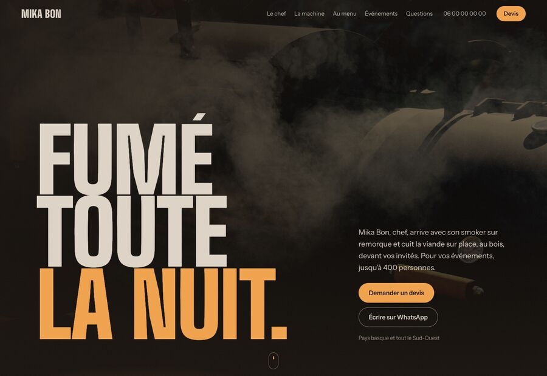
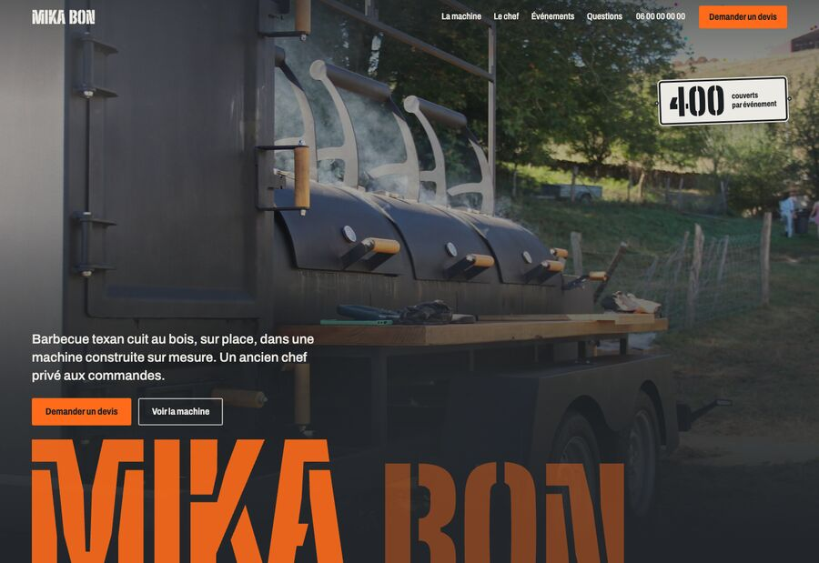
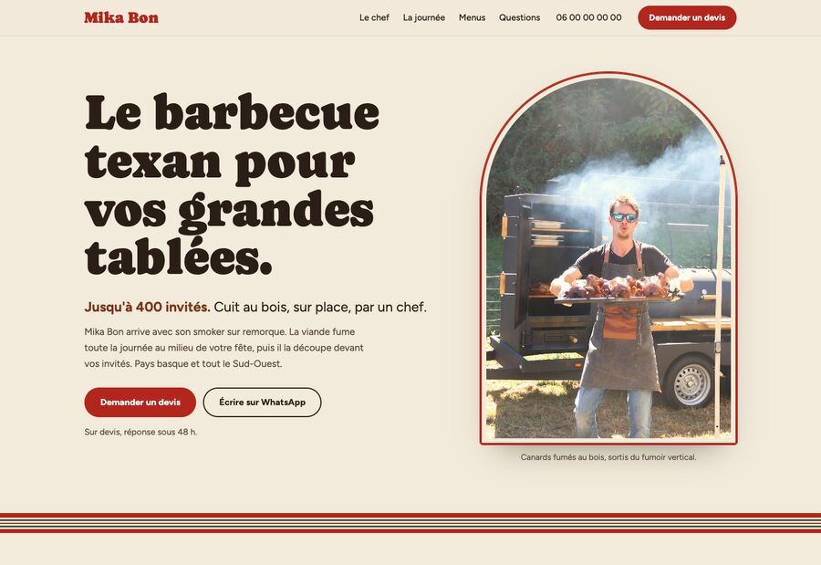

Mika Bon,
trois directions
Trois façons de présenter le même métier, avec les mêmes photos. Ouvrez-les, scrollez jusqu'au brisket, et dites laquelle vous ressemble. On peut aussi mélanger : le ton d'une, les couleurs d'une autre.

A. Fumée
Nocturne et cinématographique. On entre dans la fumée, la viande se déchire sous la braise.
Ouvrir la direction A
B. L'Atelier
La machine en héroïne. Acier noir, orange chantier, fiche technique qui se dessine au scroll.
Ouvrir la direction B
C. La grande tablée
Lumineuse et festive. Le Texas au milieu d'une fête basque, pensée pour les mariés comme pour les entreprises.
Ouvrir la direction C